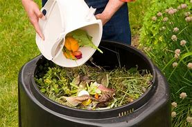
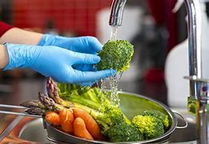

Aspectos Sustentables
de Muestras Gastronómicas
| Ingredientes:
-Pechuga de pollo -Lechuga -Espinacas -Queso manchego -Mango -Ejote -Jamón -Zanahoria -Jitomate Los ingredientes que utilizaremos son provenientes de México cultivados y creados localmente. Es el caso de la pechuga que proviene del pollo ese puede ser criado localmente. Las verduras que son lechuga, jitomate, zanahoria, espinacas y ejote pueden ser cultivadas gracias al tipo de clima de la región por lo que al ser locales el uso de transporte de los mismos es mínimo lo que ayuda a reducir la huella de carbono, con excepción del mago. En el caso del jamón y el queso manchego que son productos empaquetados si son hechos en México pero al ser empaquetados generan desperdicios inorgánicos que suelen ser mínimos pero tarda un tiempo en desintegrarse. Actualmente con los desechos generados por los ingredientes realizaremos dos cosas, primero con las cáscaras o desechos de las verduras podríamos utilizarlos como abono para el cultivo de otras hortalizas ya que son desechos orgánicos que se integran más fácilmente a la tierra. En cuanto a los desechos de los empaquetados que generalmente son plásticos, estos pueden ser biodegradables y ese plástico podríamos reutilizarlo a futuro para algún otro proyecto. Otro de los materiales que utilizaremos es el papel aluminio para envolver las pechugas previamente preparadas y aunque este material tarda aproximadamente 10 años en desintegrarse puede ser previamente lavado y reutilizado después de la receta. Método de cocción: La cocción a baja temperatura reduce el consumo de energía y a pesar del calentamiento preserva mayor cantidad de vitaminas y sustancias nutritivas. Para ellos suelen ser suficientes uno o dos centímetros de agua para cocinar patatas, huevo o verduras al vapor. Es una opción más económica y saludable, ayuda a reducir el consumo energético y por lo tanto la factura de la luz, al cocinarse los alimentos mucho más rápido.Tan solo necesitas agua sal y los ingredientes que se desean cocinar al vapor. Prácticas éticas: Se conoce como alimentos éticos aquellos que son productos de temporada, alimentos producidos a corta distancia, los productos de origen animal en especial la carne o en este caso el pollo que no hayan sido maltratados los animales. Al ser una región productora cumplimos con este aspecto de alimentos éticos y no utilizamos los recursos que contaminan comúnmente como envolturas o el transporte de los alimentos de larga distancia. |

 |